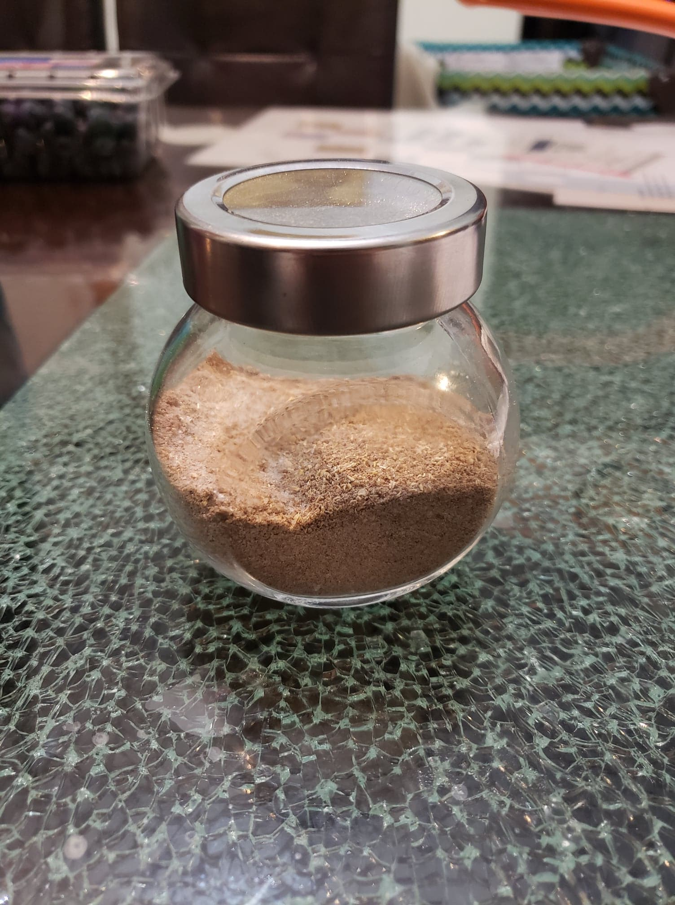

Jiao Yan

Ingredients:
- 2 tbsp Sichuan peppercorns
- 1 tbsp White pepper
- 2 tbsp Salt
Instructions:
- Toast the Sichuan peppercorns over medium-high heat for about 30 seconds.
- Grind the peppercorns in a spice grinder. If there is too much space in the grinder, add the white pepper to the grinder as well.
- Mix together the ground Sichuan peppercorns, white pepper and salt together.